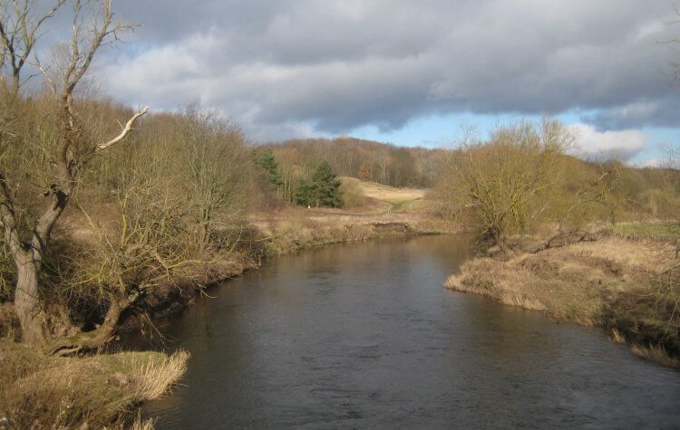
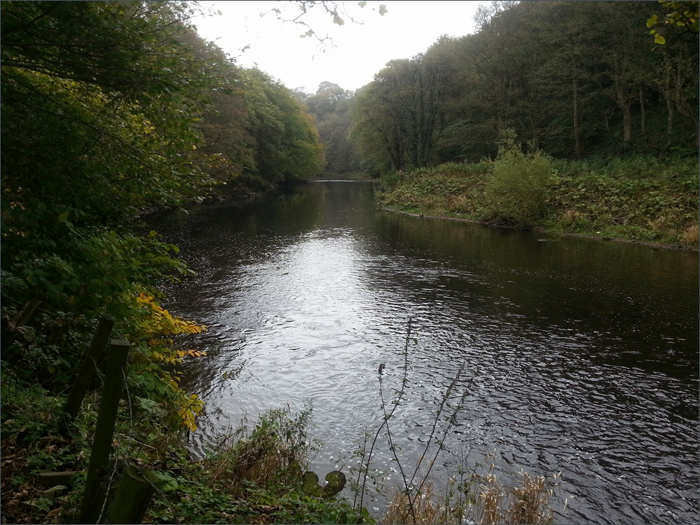
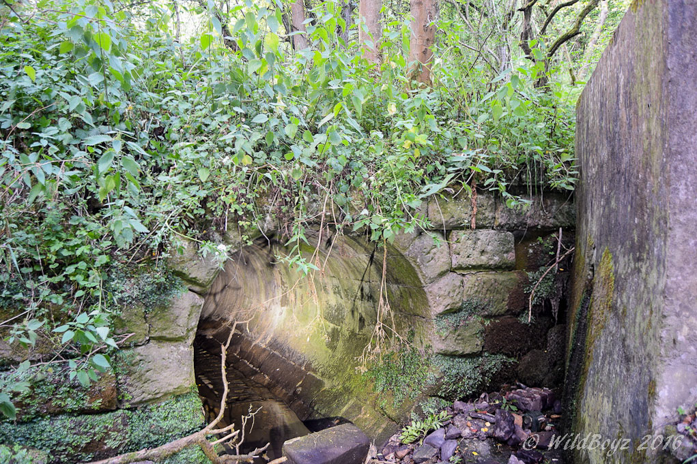
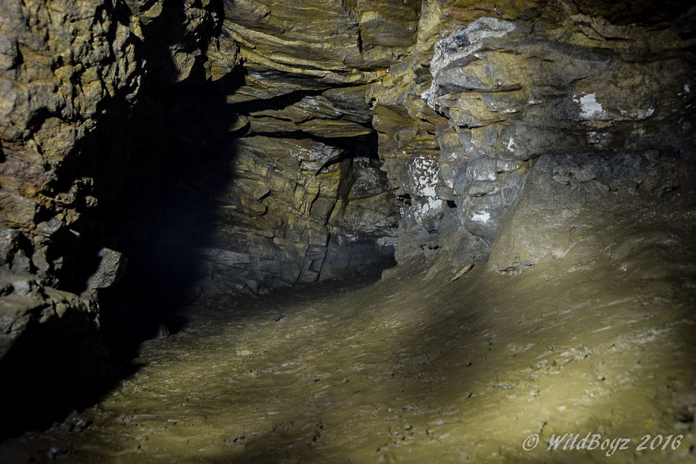
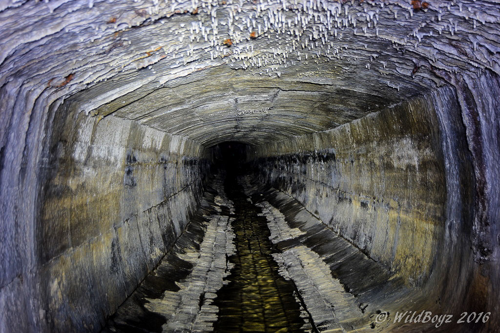
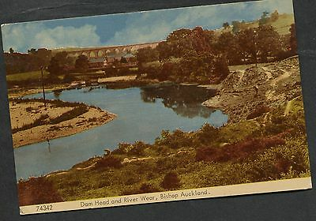

Learn something new.
Tuesday 9th November 2021, 20:59.
IT.
I’m 29 and I just read IT for the first time. That in itself is a horror story. I am certainly not the first and won’t be the last to tell you what an amazing book it is. It’s singularly the most terrifying book I’ve ever read but it also has such a beauty to the story it’s almost unbearable.
What really got me about IT is how much the story reminded me of my childhood and my hometown. I come from Bishop Auckland, County Durham (UK). For those of you who don’t know, it’s a small village in North East England and, like Derry, there’s not a great deal there except really old stuff.
To dive straight in - if you’ll excuse the pun - we had our own version of the Barrens when we were kids. We knew it as ‘the Dam Head’ or ‘the Dam ‘ed’ in the local dialect. The Dam Head was a place parents didn’t want their children going to, but had no way of knowing or stopping them either way. As kids, we spent many a summer day down the Dam Head, swimming in the filthy river, using makeshift fishing rods to catch eels and unwanted sheep carcasses that hid in the depths of the filth. We had BBQs, played Manhunt, slid down the clay cliffs into the river, talked about the boys/girls we fancied and more often than not there were fights down there and that was just the way it was, and we loved it.
The Dam 'ed.
Image source: https://www.walkingcountry.co.uk/parks-trails/areas-of-natural-beauty-walks/wear-valley/
We loved the Dam Head but we were also scared of it. Not the river per se, but the whole area and the vibe it gave off. It always felt very old and isolating. I was a brave (reckless) child and I never went down there alone. We always went in groups and, like The Losers, we would walk single file through the overgrown bushes and follow trails made by ourselves and others. When I think back now, it really feels like we were way back in some old, forgotten time. When we first started going down there none of us had mobile phones, or if we did we certainly had no credit to use them. We would adventure down there for hours, into the trees, and further still simply enjoying the freedom of the day.
Our Barrens.
Image source: https://www.seatrout-fishing.com/river-wear.htm
One of the top spots of the Dam Head was the ‘Iron Bru river’ which was a little stream that had the exact same colour as its namesake (bright orange…). I couldn’t tell you the way there now, but as kids we always found it and tried our best not to fall in, fearing what the toxic colour would do to us.
The top spot though was a place we called Smokey’s cave. The pictures tell you pretty much everything you need to know about Smokey’s, and those of you who have read IT will probably be getting that sick feeling in your stomach just imagining that kids would ‘play’ down there regularly. We discovered Smokey’s when we were around 11-13 years old and the first time I went down there was with a group of maybe 10 of us. As the summer went on, fewer and fewer people were willing to go to Smokey’s and the numbers started to dwindle with usually only 4-5 of us at a time. One of the last times I went down it was just myself and another kid. He went first and I was all by myself behind him.
The entrance to Smokey's cave
Image source: https://www.28dayslater.co.uk/threads/boxed-in-smokies-cave-bishop-auckland-august-2016.104933/
The cave is around a mile long and it took at least 30 minutes to walk through because you had to stoop most of the way, even as kids. You might be thinking that this sounds bad enough but there was another part about 1/3 of the way into the cave we called ‘the Rat Hole’. It describes itself really, but you can see from the pictures that you have to be crazy or a brave (reckless) child to crawl through that space having no idea where it would end up. We were brave and we went through and found exactly where the Rat Hole led. It opened up into a tall but small space where you could stand up and not touch the ceiling. We had lighters with us and saw that the place was full of melted candles and it turned our blood to ice knowing someone had been there. Why (how!) could someone have been down here so often to warrant all of these melted candles?
The two of us crawled back as fast as one can crawl. I actually remember scuffing my knees and hitting my face pretty badly on that particular trip. The boy I was with was much braver than I, as he wanted to continue to the end of the tunnel while all I wanted to do was get out and go to the park where loads of other kids would be. Being the tomboy that I was, I didn’t want to show I was scared so we continued on. We heard some strange things that day. I am not someone who wants to believe in the supernatural because I like logic and explanation, but I would swear I heard children’s laughter behind me in the tunnel that day.
The 'Rat Hole
Image source: https://www.28dayslater.co.uk/threads/boxed-in-smokies-cave-bishop-auckland-august-2016.104933/
The last time I went to Smokey’s I was perhaps 14 and I took my little sister and cousin down there. All three of us heard children’s laughter that day.
Suffice to say, I always made it out - we always made it out- I would say unscathed but I think we were definitely mentally scathed. I would get home from a day down the Dam Head, having walked through Smokey’s, and I would dream of old things and fear. Thankfully, nothing that involved Pennywise, lepers, or giant spiders but the dream was more of a feeling that I’d been in great danger that day and survived.
Inside Smokey's cave
Image source: https://www.28dayslater.co.uk/threads/boxed-in-smokies-cave-bishop-auckland-august-2016.104933/
---
I mentioned earlier that we were not afraid of the river, but that isn’t exactly true. The river has tragically taken the lives of a number of children, some of them friends or family of friends. The viaduct that runs over the Dam Head has also witnessed many tragic losses of life and that’s as far as I’ll go with this topic out of respect to those involved.
To finish up this spew of nostalgia and to relate back to the book, I was amazed and caught off guard by how well Stephen King was able to capture ‘my’ childhood (and thousands of others I’m sure) in his book. While reading the book I welcomed back those old memories and feelings of being a kid with my best friends in a working class village with nothing much going on, but which had an old and dangerous (almost ghostly) feel to it in certain parts. I miss those times. I ache for them as I ached for The Losers’ friendship when I finished the book.
I returned to the Dam Head recently as an adult and with my American partner. We walked down there just the two of us. We walked there from a neighbouring village and so the route we took wasn’t the same one we took as kids. As soon as we got to familiar ground I began to feel even more scared and exposed than I ever had as a child. We walked through the overgrown bushes and though I couldn’t remember the way at all, we still managed to stumble upon the Iron Bru river. We continued on with that real feeling of dread hanging over me and I walked him past Smokey’s cave but could not for the life of me bring myself to get close enough to actually see the tunnel. I was so desperately relieved when we finally got away from the Dam Head and started heading back towards the town.
Bishop Auckland is my Derry and the Dam Head was my Barrens. I had my own Pennywise but that’s another story that isn’t yet ready to be told. Beep beep Sammy.
Thanks for the trip Stephen, and thank you for reading.
Sammy Wymer.
Image source: https://picclick.co.uk/C1960s-View-of-Dam-Head-River-Wear-272393661185.html